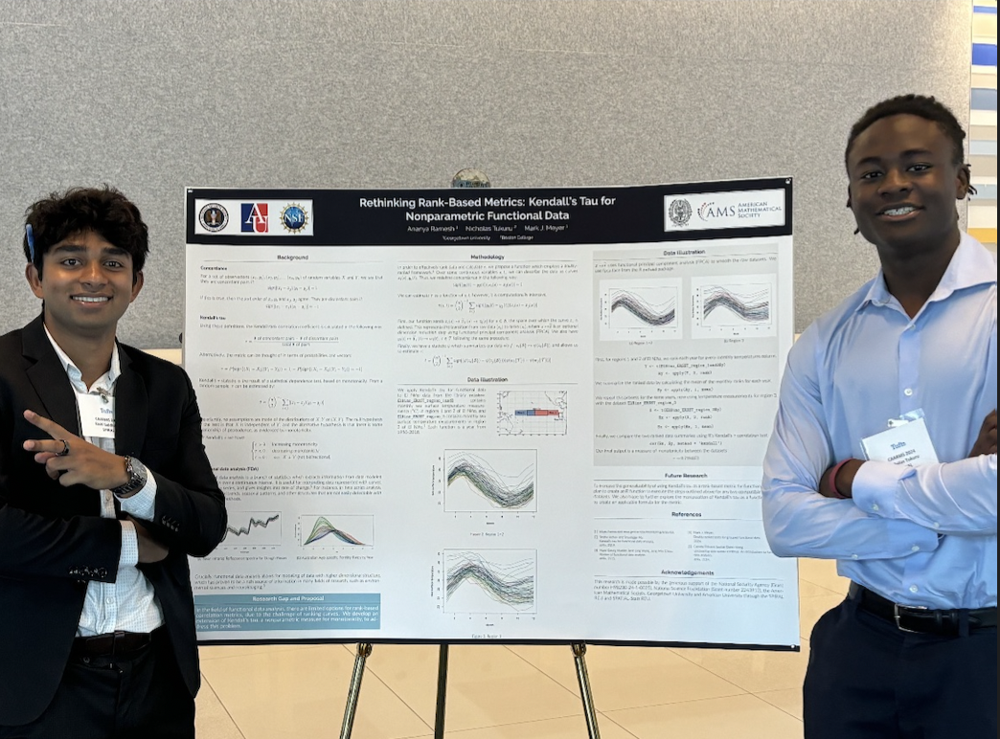

Rishi Siddharth
What I Do
- Consultant at Zinnov on the Globalization Excellence team. I help technology companies and investors figure out where to build teams, how to run global capability centers, and which talent markets can support them. I also work on the private equity side: commercial diligence and screening tech companies.
- Starting a Master's in Data Science at Penn Engineering in spring 2027.
- Building internal tools to boost efficiency.
- Helping run AI Wednesdays, a weekly lunch where colleagues show what they've built with AI.
- Writing about AI, technology, markets and geopolitics. My latest essay is We Are the Neanderthals.
Before This
- Graduated from American University in data science and international business, with a year at the London School of Economics.
- Research with NASA on Artemis II Doppler tracking, and NSF/NSA-sponsored research using machine learning to predict which federal bills pass.
- Worked at an AI startup evaluating language models on payroll systems, and built climate data infrastructure at LSE through the Transition Pathway Initiative.
Who I Am
I'm originally from Menlo Park, California, and now live in New York. I love soccer, reading and hiking. I spend most of my time thinking about AI, history and empires, markets, and how institutions handle new technology.
The world is changing rapidly, and I'm excited to be a part of it.
Life



Education


Interests
Soccer
History & Empires
AI & Tech Policy
Books
Climate Finance
Travel
Global life expectancy
73 years
up from 29 in 1800
Global literacy rate
87%
up from 12% in 1820
source: Our World in Data